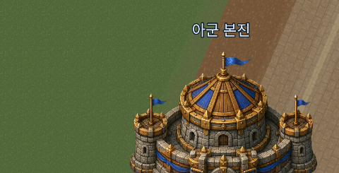
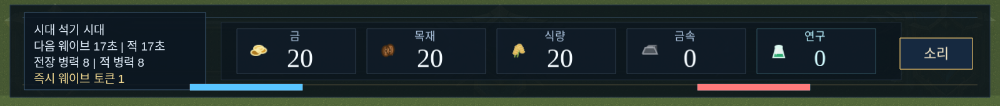
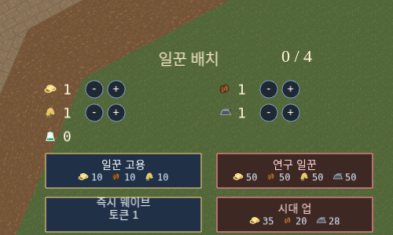
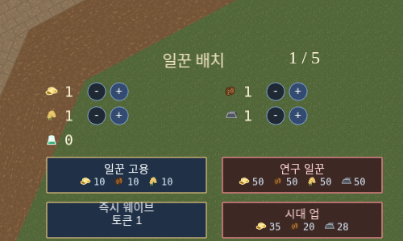
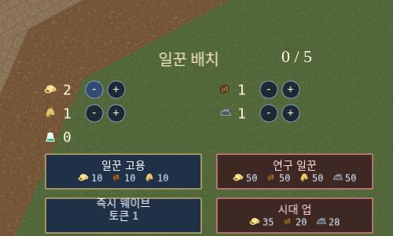
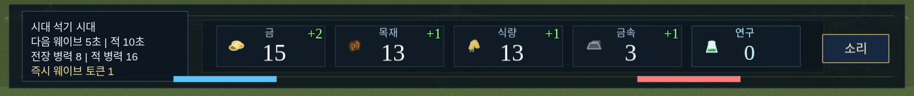
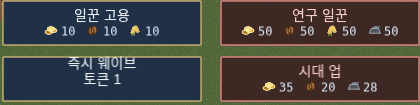
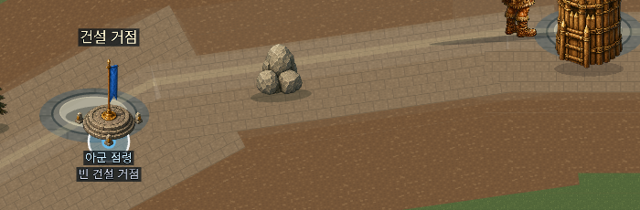
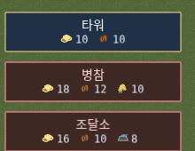

nan2026 AI 게임잼 출품작 — 제출물 3. 게임 소개 및 설명 문서전선과 요새를 두고 충돌하는 지휘 전장 — 넓은 대각선 레인 전장에서 자동 웨이브와 경제를 운영하는 전략 게임
Warcrest는 좌하단 아군 본진과 우상단 적 본진 사이를 잇는 대각선 레인에서 병력이 자동으로 편성·이동·전투하는 오토배틀러형 공성 경제 게임입니다. 플레이어는 유닛을 직접 조작하는 대신, 자원 생산·일꾼 배치·시대(테크) 진행·거점 점령과 시설 건설을 운영하며 전황을 유리하게 만듭니다. 석기 시대부터 현대에 이르는 11개 시대를 거치며 병종과 시설이 점점 강력해지는 문명 발전형 진행이 핵심 루프입니다.
설치가 필요 없습니다. 아래 링크를 클릭하면 브라우저에서 바로 실행됩니다.
git clone → npm install →
npm run dev (Node.js 20 이상 필요). 자세한 절차는 저장소의
README.md 참고.| 난이도 | 적 자원 생산 배율 | 적 연구(공/방) 최저 보정 |
|---|---|---|
| 초급 | ×1 | 없음 |
| 중급 | ×2 | 1단계 보장 |
| 고급 | ×3 | 2단계 보장 |
| 신 | ×4 | 3단계 보장 |
상대 본진의 체력을 먼저 0으로 만들면 승리, 내 본진의 체력이 먼저 0이 되면 패배합니다. 병력은 정규 웨이브 주기마다 자동으로 편성되어 레인을 따라 전진하며, 상대 병력·타워와 자동으로 교전합니다.
| 조작 | 설명 |
|---|---|
| 일꾼 배치 (+/−) | 금/목재/식량/금속/연구 5개 자원 중 어디에 일꾼을 배정할지 실시간으로 재분배. 기본 일꾼 1명은 자원별로 항상 유지되며, 추가로 고용한 일꾼만 자유롭게 이동 가능. |
| 일꾼 고용 / 연구 일꾼 | 자원을 소모해 일꾼 총원 자체를 늘림. 연구 일꾼은 즉시 연구 자원 생산에 투입됨. |
| 즉시 웨이브 | 보유한 토큰을 소모해 다음 정규 웨이브를 기다리지 않고 즉시 병력을 출전시킴 (직전 웨이브 후 일정 시간의 쿨다운, 식량 조건 있음). 토큰은 시대 진행 시 지급됨. |
| 시대 업 | 자원을 모아 다음 시대로 진행. 더 강한 병종·시설이 해금되고, 석기 → 청동기 → 초/중/후기 철기 → 르네상스 → 근대 초/후기 → 현대 초/중/후기까지 총 11단계. |
| 거점 점령 | 전장 중앙의 거점을 클릭해 점령하면 방어 타워 / 병참(전투력 강화·마나 보급) / 조달소(치유) 중 하나를 건설할 수 있음. 재건·폐기도 클릭으로 조작. |
게임 내 모든 효과음·배경음을 직접 들어볼 수 있는 오디오 랩 화면을
?sandbox=2 쿼리로 열 수 있습니다
(예: https://gilgarad.github.io/warcrest/?sandbox=2).


"일꾼 배치" 패널의 각 자원 행 옆 + / − 버튼으로 유휴 일꾼을 원하는 자원으로 재배치합니다. 아래는 실제 조작 순서입니다.







게임 로직 설계·구현·디버깅·밸런싱 전 과정을 Claude Code(AI 코딩 에이전트)와의 협업으로 진행했습니다. 구체적인 지시/피드백 turn 기록은 별도 제출물 "AI 활용 기술 문서"에서 다룹니다. 효과음은 CC0 레퍼런스 녹음을 분석해 그래뉼러 방식으로 완전히 새로 합성한 자체 제작 자산이며(원본 파형은 출력에 포함되지 않음), 그 외 아트/음악 자산은 자체 생성했습니다.